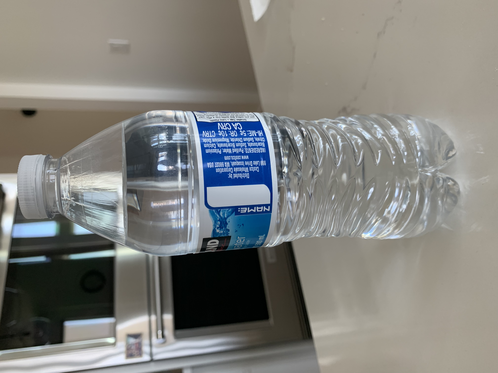

Test Image -

Output on GOOGLE LENS -
water bottle
Output on Mobilenet Model -
water bottle
Result -
Both got the same
Conclusion -
I have tested 10 images
Google Lens has predicted 6 of them more accurately and Mobile Net was less accurate
So, according to my case study Google Lens is more accurate